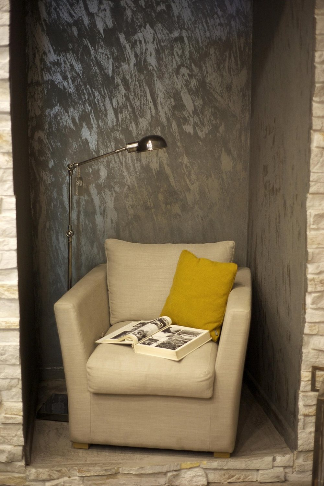

November 15, 2026 · By Pixel Punk Studio
"Large print" on a cover sounds like a promise, but it isn't one. There is no single rule for what the words mean on a puzzle book, so one "large print" word search has letters you can read from across the table, and the next one is barely bigger than a newspaper. If you are buying for yourself, a parent with tired eyes or someone with low vision, here is what the labels usually mean and how to make sure the book really works before it becomes a gift that stays in a drawer.
What "large print" really means
Ordinary books and puzzle magazines print letters of about 9 to 12 points. Most "large print" puzzle books use letters of about 14 to 18 points, often with bigger grids of 20 x 20 squares and 25 to 30 words per puzzle. "Jumbo", "extra large" or "giant" print goes further: letters of 24 points or more, fewer squares and shorter word lists, so each letter has room to breathe. Our own books are a good example: the grids in Cozy Christmas Word Search have letters of about 15 points, while Jumbo Christmas Word Search prints both the grid and the word list at 30 points, twice as big.
Large print vs jumbo print at a glance
- Large print: letters about 14 to 18 points, grids around 20 x 20, 25 to 30 words. More puzzle per page, still a real challenge.
- Jumbo print: letters 24 points or more, grids around 14 x 12, 15 to 20 words. Fewer words, but every letter reads at a glance.
- Both should have dark letters on a light page, wide margins and the answers at the back.
Which one to choose
- Reads a newspaper with glasses, just gets tired: large print is usually enough.
- Needs a magnifier for small print, or has macular changes or cataracts: choose jumbo print.
- Solves in a dim room or in bed: go one size up from what you'd pick at a sunny table.
- Has shaky hands: jumbo print, since bigger squares are easier to circle.
- Not sure? Print one free page of each size (below) and let them choose.
How to check a book before you buy
- Look for a number, not just a label. A book that states its font size ("30 pt") is usually honest about it; "large print" alone tells you little.
- Use the "Look inside" pages. Compare a grid with the size of the cover: if the grid fills most of an 8.5 x 11 inch page with only 14 or 15 squares across, the letters are big.
- Count the squares across. At the same page size, 14 squares means much bigger letters than 20 or 25.
- Check the page size. A 6 x 9 inch book with "large print" has smaller letters than an 8.5 x 11 inch one with the same grid.
- Read the reviews for "too small". Buyers who bought for a parent usually say so quickly.
Other things that matter as much as letter size
- Contrast: black letters on white or very light paper. Busy pictures behind the grid make letters harder to find.
- A plain font: simple, even letters without decoration read best.
- Single-sided pages: no ink showing through from the back, and a page you can tear out and hold close.
- Good light: a lamp from the side or behind the shoulder helps more than people expect.
- A pencil or felt-tip with a thick line, so circled words stay easy to see.

Try both sizes for free
The easiest test is on paper. Print our free large print Christmas word search and our free jumbo print page, put them side by side and see which one feels relaxing rather than tiring. When you know, Cozy Christmas Word Search has 55 large print puzzles, and Jumbo Christmas Word Search has 100 puzzles in 30 point print with a fun fact facing every one.